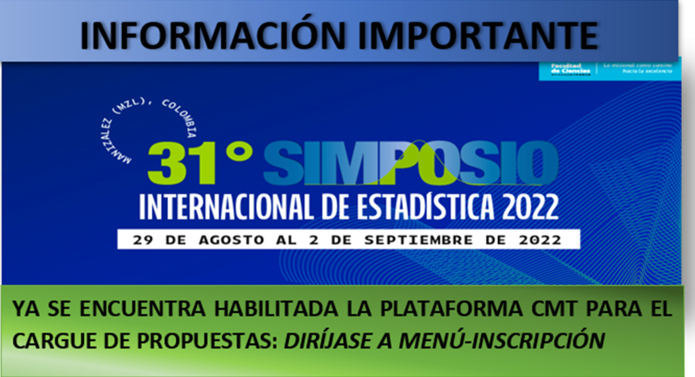
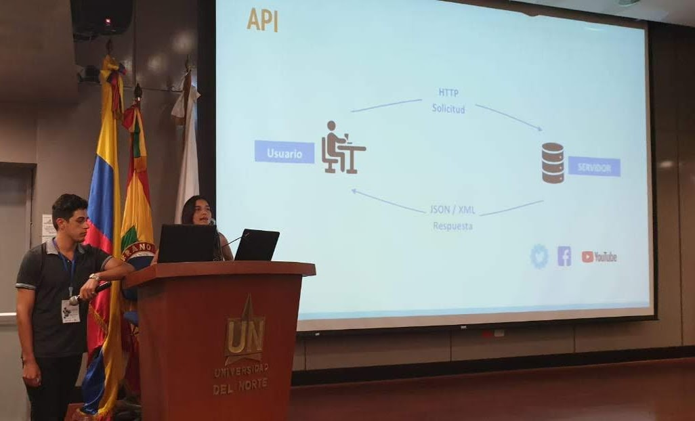
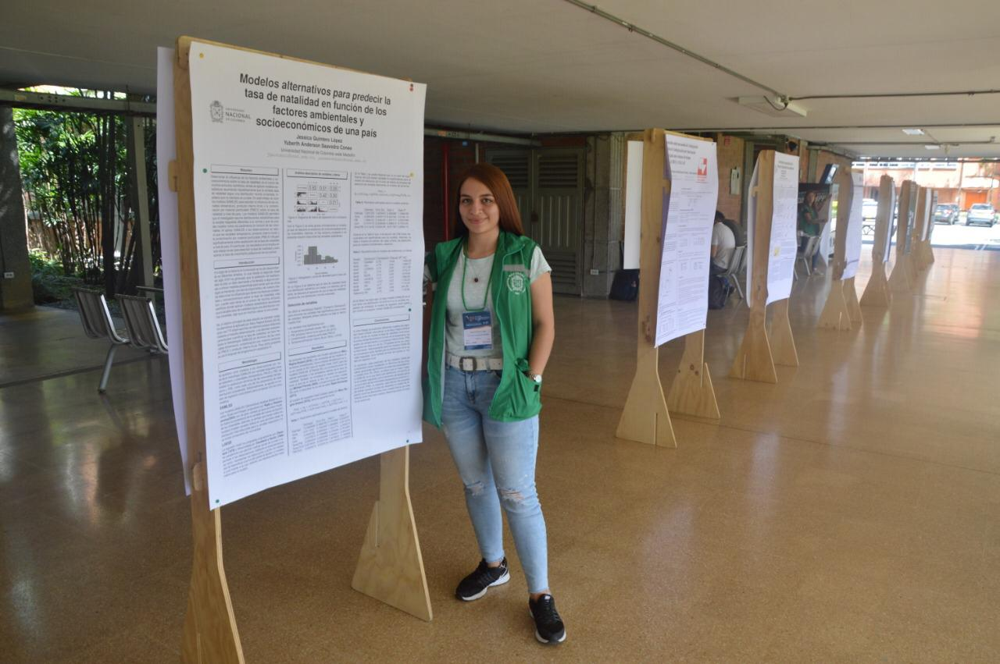
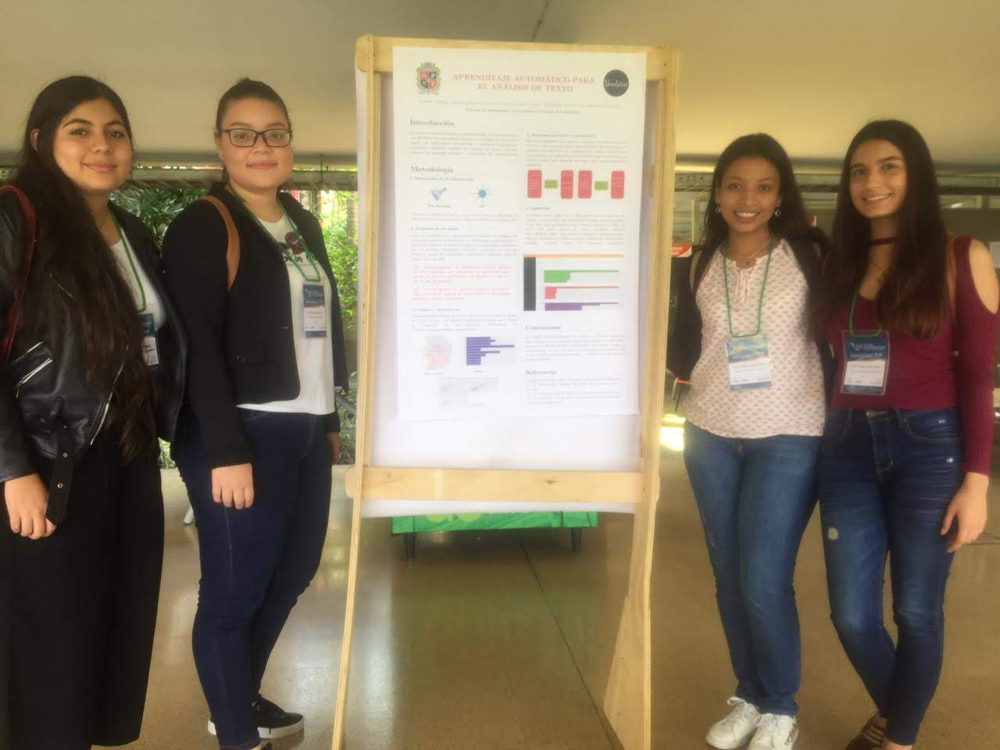
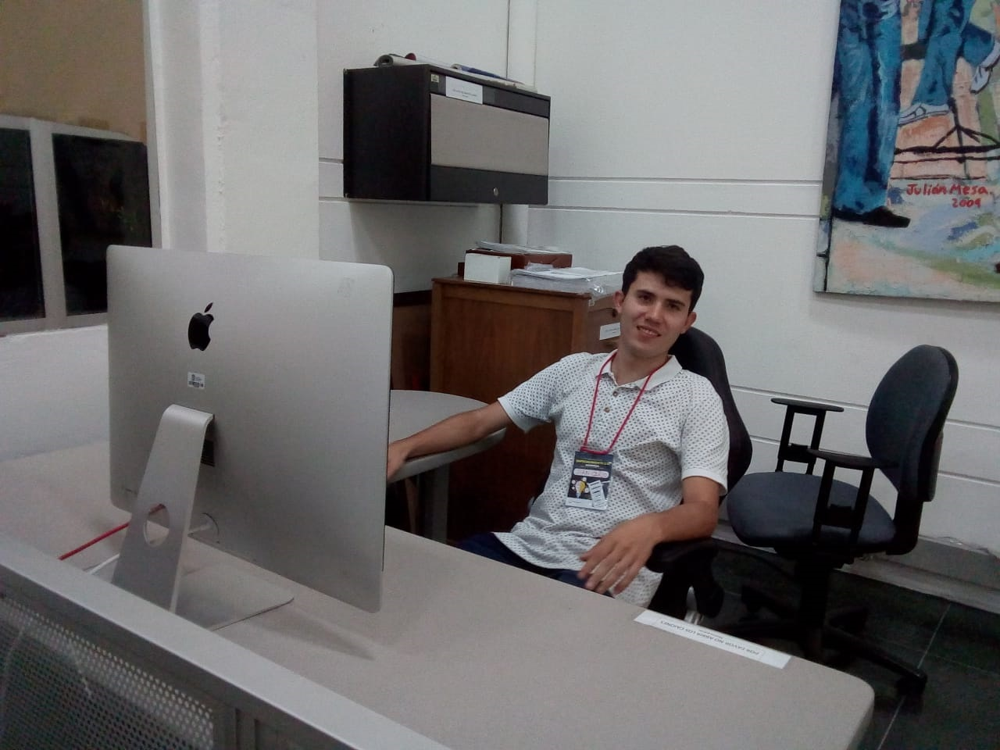
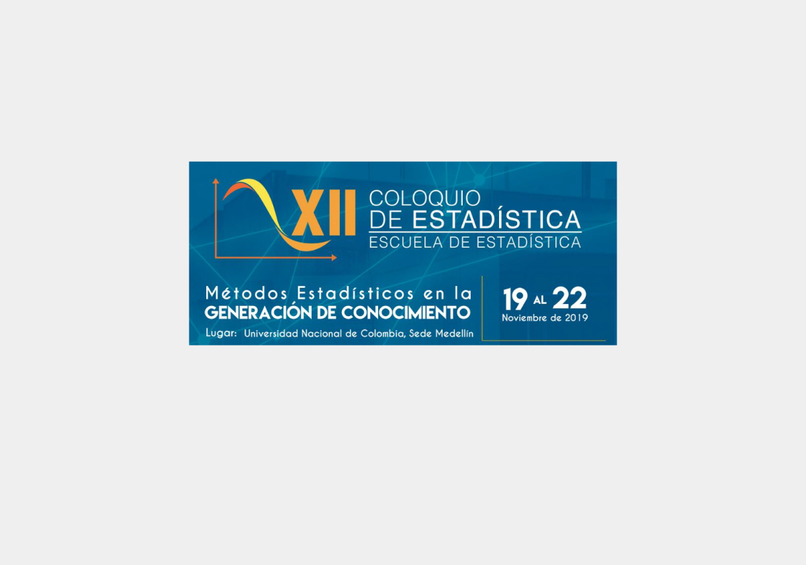

31° Simposio Internacional de Estadística
El Simposio ha sido uno de los eventos donde la comunidad académica y profesional se reúne para actualizar conocimientos y conformar redes de trabajo.

El Simposio ha sido uno de los eventos donde la comunidad académica y profesional se reúne para actualizar conocimientos y conformar redes de trabajo.

Estudio de terminologías orientadas a data science mediante text mining y técnicas de análisis multivariado.

Participación en el XII Coloquio de Estadística. Influencia de factores ambientales sobre la tasa de natalidad.

Desarrollo de aplicación para análisis de texto mediante resúmenes extractivos y procesamiento de lenguaje natural.

Felicitación a Jean Carlo, miembro de Unalytics, por ganar el concurso con su proyecto de redes neuronales.

Espacio para técnicas de visualización, aprendizaje estadístico y bibliotecas de inteligencia artificial.